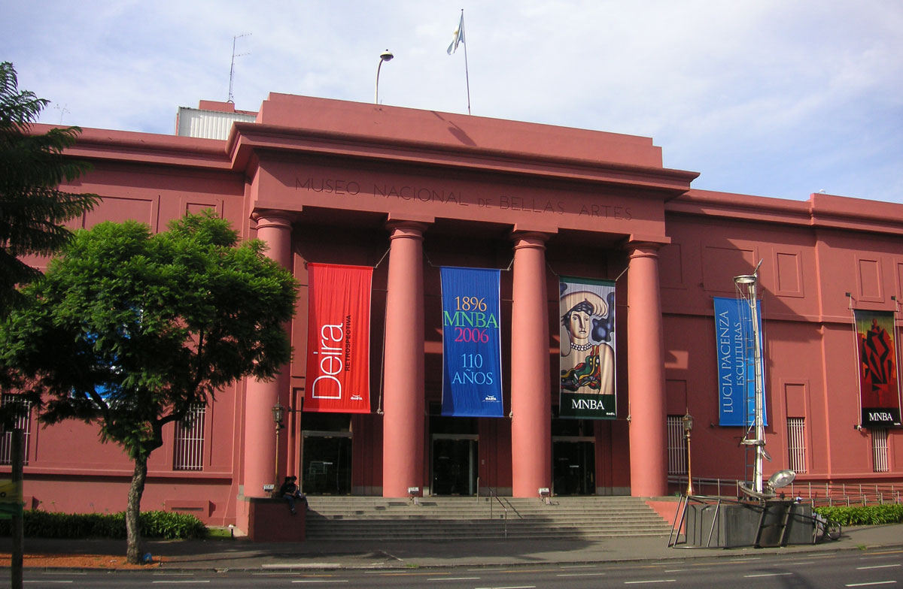
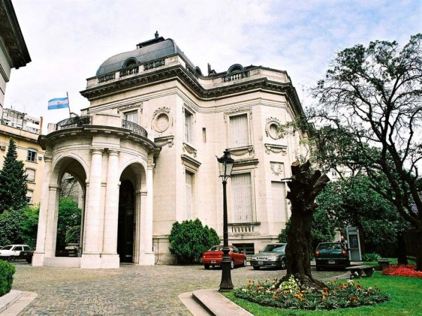

Argentina y el Arte
El mundo se divide entre Boca y River, entre Charly y Gustavo,
entre el interior y la capital, entre los que dicen "publicidad" y los que dicen "propaganda",
entre las divas televisivas Mirtha y Susana.
En Argentina, el fin del mundo siempre parece a la vuelta de la esquina, pero rara vez suele llegar.
Tan acostumbrados están los argentinos a vivir al borde del precipicio que han inventado un arte,
el del "atado con alambre", que ha vuelto a este país creativo e ingenioso,
sobreviviente y con una capacidad infinita de adaptarse a la montaña rusa que es este fascinante lugar.
Museo Nacional de Bellas Artes

Se encuentra en Recoleta y en él se encuentra una de las más grandes colecciones de arte en América del Sur. Aquí encontrará pinturas de reconocidos artistas internacionales como Rembrandt, Goya, Degas o Manet; y también artistas locales muy importantes que retratan las costumbres y las tradiciones del país y la vida en la ciudad en Argentina. No todo es arte clásico, ya que en el último piso el museo expone una colección de arte argentino del siglo XX.
Museo de Arte Decorativo

A pocas cuadras del Museo de Bellas Artes se encuentra el Museo de Arte Decorativo. Este edificio es un impresionante palacio francés y una de las mansiones más importantes de la ciudad. Si les gusta la fachada principal, no pierdan la oportunidad de entrar.
Colección Fortabat

Este museo situado en Puerto Madero fue creado por la filantrópica local Amalia Fortabat que inauguró un edificio nuevo en el barrio más joven de Buenos Aires para mostrar sus colecciones. Entre ellas se pueden encontrar pinturas de reconocidos artistas internacionales como Andy Warhol y William Turner y varios artistas importantes nacionales. Desde el segundo piso es posible disfrutar de una bella vista de los diques de Puerto Madero.